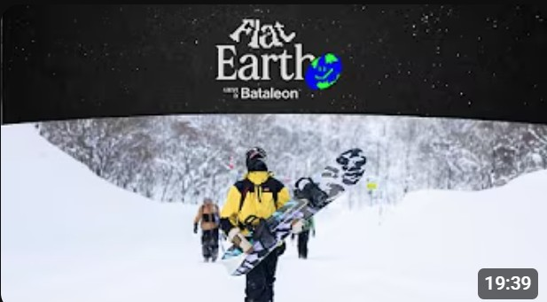

Flat Earth - A movie by Bataleon Snowboards

Bataleon presents Flat Earth, our first-ever team movie, filmed
in three diverse locations—Japan, Norway, and the Alps. This
film highlights our team’s spirit, giving each rider the chance
to showcase their unique style and what they bring to the crew.
With a strong lineup of Bataleon riders, Flat Earth emphasizes
the shared experience and bond that make our team special.
Smile, it’s snowboarding